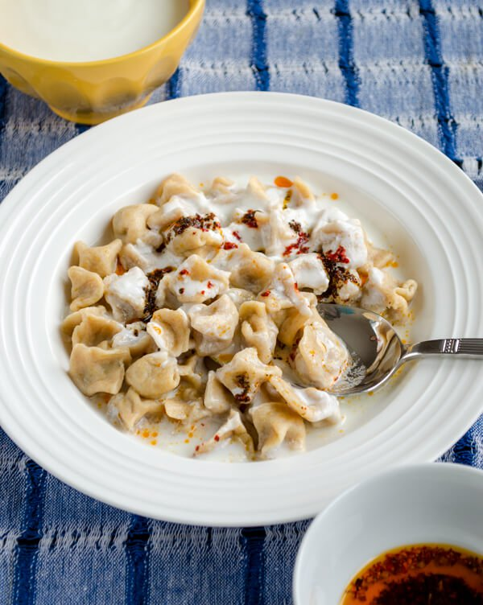
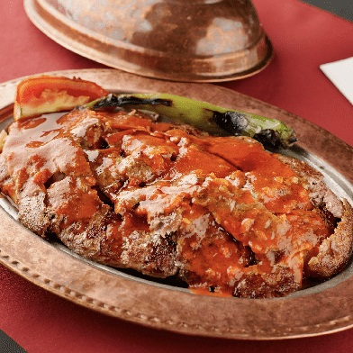
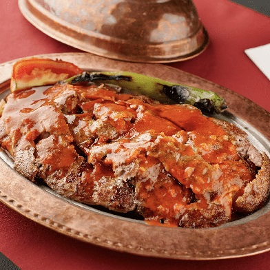

Turkish cuisine (Turkish: Türk mutfağı) is largely the heritage of Ottoman cuisine, which can be described as a fusion and refinement of Central Asian, Middle Eastern, Eastern European and Balkan cuisines.[1][2][3] Turkish cuisine has in turn influenced those and other neighbouring cuisines, including those of Southeast Europe (Balkans), Central Europe, and Western Europe.[3]

The Ottomans fused various culinary traditions of their realm with influences from Levantine cuisines, along with traditional Turkic elements from Central Asia (such as yogurt and mantı), creating a vast array of specialities—many with strong regional associations.[citation needed]
Turkish cuisine varies across the country. The cooking of Istanbul, Bursa, Izmir, and rest of the Asia Minor region inherits many elements of Ottoman court cuisine, with a lighter use of spices, a preference for rice over bulgur, koftes and a wider availability of vegetable stews (türlü), eggplant, stuffed dolmas and fish. The cuisine of the Black Sea Region uses fish extensively, especially the Black Sea anchovy (hamsi) and includes maize dishes. The cuisine of the southeast (e.g. Urfa, Gaziantep, and Adana) is famous for its variety of kebabs, mezes and dough-based desserts such as baklava, şöbiyet, kadayıf, and künefe.
 Especially in the western parts of Turkey, where olive trees grow abundantly, olive oil is the major type of oil used for cooking.[4] The cuisines of the Aegean, Marmara and Mediterranean regions are rich in vegetables, herbs, and fish. Central Anatolia has many famous specialties, such as keşkek, mantı (especially from Kayseri) and gözleme. Food names directly cognate with mantı are found also in Chinese (mantou or steamed bun) and Korean cuisine (mandu).

A specialty's name sometimes includes that of a city or region, either in or outside of Turkey, and may refer to the specific technique or ingredients used in that area. For example, the difference between Urfa kebap and Adana kebap is the thickness of the skewer and the amount of hot pepper that the kebab contains. Urfa kebap is less spicy and thicker than Adana kebap. Although meat-based foods such as kebabs are the mainstay in Turkish cuisine as presented in foreign countries, native Turkish meals largely center around rice, vegetables, and bread.
Turkish cuisine (Turkish: Türk mutfağı) is largely the heritage of Ottoman cuisine, which can be described as a fusion and refinement of Central Asian, Middle Eastern, Eastern European and Balkan cuisines.[1][2][3] Turkish cuisine has in turn influenced those and other neighbouring cuisines, including those of Southeast Europe (Balkans), Central Europe, and Western Europe.[3] The Ottomans fused various culinary traditions of their realm with influences from Levantine cuisines, along with traditional Turkic elements from Central Asia (such as yogurt and mantı), creating a vast array of specialities—many with strong regional associations.[citation needed]
Especially in the western parts of Turkey, where olive trees grow abundantly, olive oil is the major type of oil used for cooking.[4] The cuisines of the Aegean, Marmara and Mediterranean regions are rich in vegetables, herbs, and fish. Central Anatolia has many famous specialties, such as keşkek, mantı (especially from Kayseri) and gözleme. Food names directly cognate with mantı are found also in Chinese (mantou or steamed bun) and Korean cuisine (mandu).

A specialty's name sometimes includes that of a city or region, either in or outside of Turkey, and may refer to the specific technique or ingredients used in that area. For example, the difference between Urfa kebap and Adana kebap is the thickness of the skewer and the amount of hot pepper that the kebab contains. Urfa kebap is less spicy and thicker than Adana kebap. Although meat-based foods such as kebabs are the mainstay in Turkish cuisine as presented in foreign countries, native Turkish meals largely center around rice, vegetables, and bread.
Turkish cuisine (Turkish: Türk mutfağı) is largely the heritage of Ottoman cuisine, which can be described as a fusion and refinement of Central Asian, Middle Eastern, Eastern European and Balkan cuisines.[1][2][3] Turkish cuisine has in turn influenced those and other neighbouring cuisines, including those of Southeast Europe (Balkans), Central Europe, and Western Europe.[3] The Ottomans fused various culinary traditions of their realm with influences from Levantine cuisines, along with traditional Turkic elements from Central Asia (such as yogurt and mantı), creating a vast array of specialities—many with strong regional associations.[citation needed]